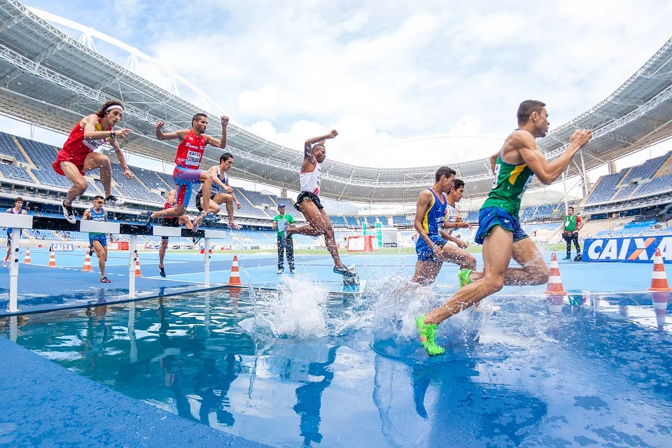

Helping To Inform
Track Athletes

For the shorter distances like the 100 meter, 200 meter and 400 meter, speed is paramount. Use sprinter spiked shoes, which are very lightweight and designed for speed. They have five to eight spikes that can be interchanged with studs or other spikes of varying sizes and shapes. Spikes can come in sizes as small as 3 mm, used primarily for indoor events, to 7 mm for outdoor tracks. Rounded studs will not grip nearly as well as spikes on a good surface. For short sprints on surfaces in good condition, 3 mm to 5 mm pyramid-shaped spikes will give you adequate grip and acceleration.
High Jump spikes provide athletes with a lot of support to their ankles during the run up and take off. High Jump spikes are different to running spikes as you will find up four spikes on the heel part of the spike. This is because High Jumpers during take off will place their foot heel first so the additional spikes provide maximum grip in any weather/track conditions.
Distance spikes usally always are as light as they can be and also usually have less pens in the bottom of the spike anywhere from 3-7 pins.